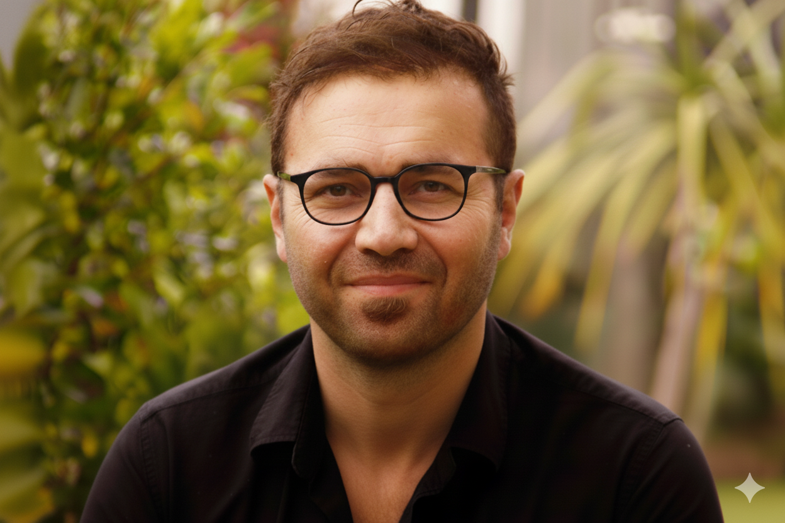

Academic with two doctoral degrees in Mathematics and Computer Science, and over a decade of university teaching experience spanning pure mathematics, applied mathematics, numerical computation, and data science. Active postdoctoral researcher at the University of Auckland with a strong international publication record.
My academic journey began with a deep fascination with the foundations of mathematics, shaped early by Professor Horst Herrlich's Axiom of Choice, which inspired my Master's thesis on the topological consequences of its absence. I later completed my Ph.D. in Functional Analysis at Ege University, focusing on Banach-lattice-valued measures and integrals, spending the final year of my doctoral research at Delft University of Technology.
In 2020, drawn by the publication of Attention Is All You Need and its profound implications for scientific reasoning, I began a second Ph.D. in Computer Science at the University of Auckland. As a mathematician, I was compelled to understand the theoretical foundations of transformer architectures — examining attention mechanisms through the lens of linear operators and grounding neural architectures in functional analytic intuition.
My dual expertise positions me uniquely at the intersection of rigorous mathematical theory and cutting-edge AI research. I maintain active collaborations with Microsoft AI, Google DeepMind, and the Allen Institute for AI, and hold 33 publications across mathematics and AI venues.